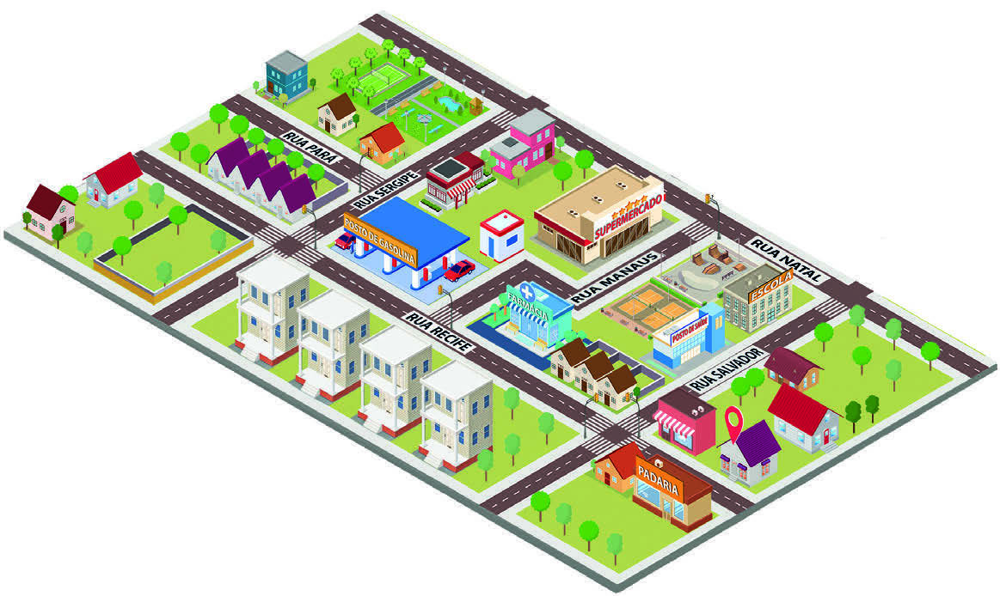

ALGUMAS PESSOAS USAM ALGUM ARTIFÍCIO PARA MEMORIZAR OS LADOS ESQUERDO E DIREITO DO CORPO.
POR EXEMPLO: O BRAÇO EM QUE COLOCO O RELÓGIO É O ESQUERDO, A MÃO QUE USO PARA SEGURAR O GARFO É A DIREITA.
COMO VOCÊ FAZ PARA SABER QUAL É O LADO DIREITO E O ESQUERDO DO SEU CORPO? Resposta pessoal.
EXPLIQUE PARA OS COLEGAS E O PROFESSOR.
SIMONE MORA NA CASA QUE FICA EM FRENTE À PADARIA.
AOS DOMINGOS, ELA VAI CAMINHAR COM SEU CACHORRO NA PRAÇA.
LEIA A DESCRIÇÃO DO TRAJETO QUE ELA PERCORRE ATÉ A PRAÇA:
“SIMONE SAI DA SUA CASA, VIRA À DIREITA, NA RUA RECIFE, E PASSA PELA FARMÁCIA QUE FICA EM FRENTE AO CONJUNTO DE PRÉDIOS.
ATRAVESSA A RUA MANAUS E CONTINUA CAMINHANDO ATÉ O POSTO DE GASOLINA, ONDE VIRA À DIREITA, NA RUA SERGIPE.
LOGO EM SEGUIDA, ANDA UM QUARTEIRÃO, ATRAVESSA A RUA PARÁ E, APÓS A CASA DE ESQUINA, CHEGA À PRAÇA.”
OBSERVE O MAPA DO ENTORNO DA CASA DE SIMONE.

A) DESENHE NO MAPA O TRAJETO QUE SIMONE PERCORREU ATÉ A PRAÇA.